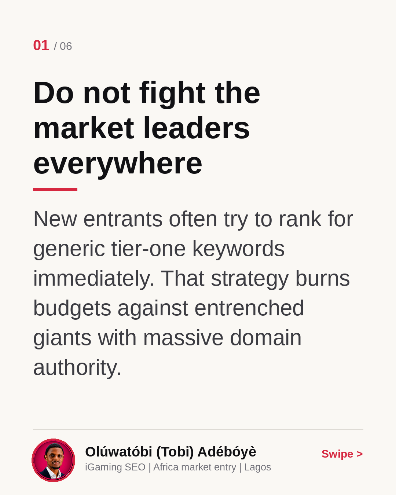
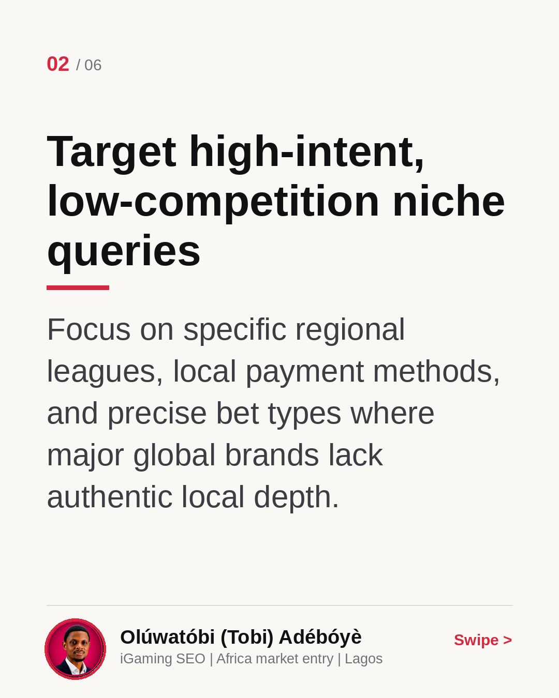
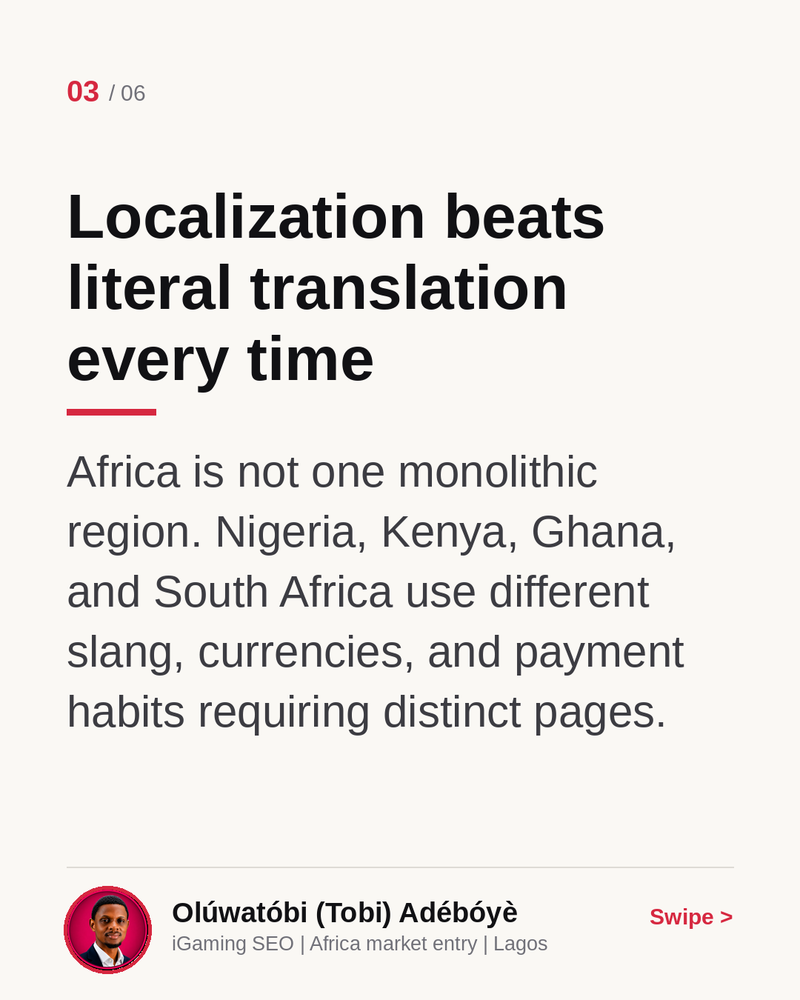
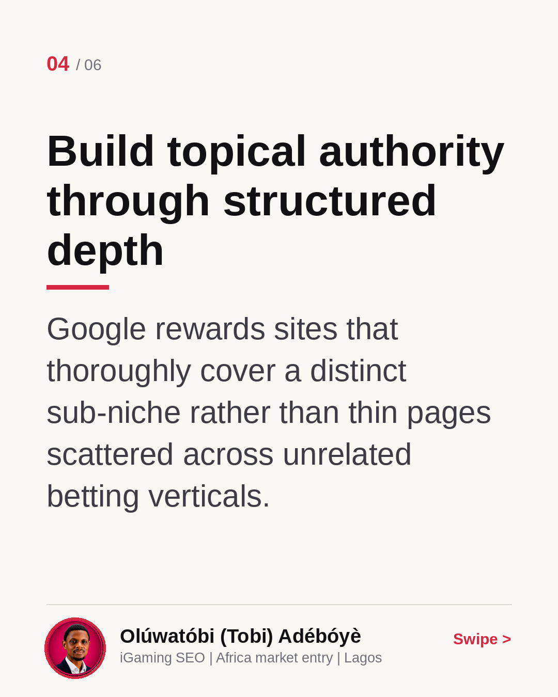
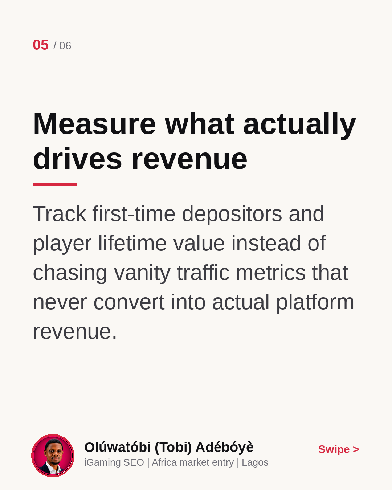
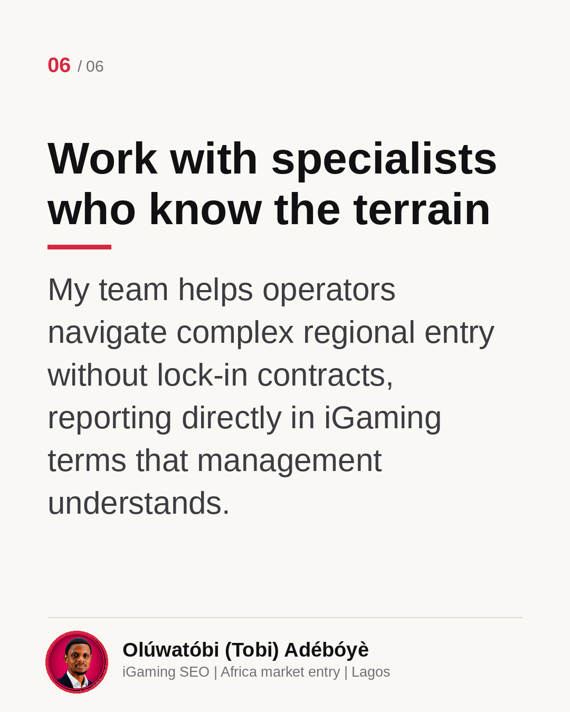

Why a new iGaming domain can still win
Entering a new iGaming market as a fresh domain feels daunting when giant operators already dominate broad search terms. But by picking your fights carefully, targeting specific local nuances, and avoiding generic keywords, new brands can still capture valuable market share. This carousel breaks down how to approach your SEO strategy for better results. What is your biggest challenge when launching in a new region? Check out the carousel for practical insights.
Do not fight the market leaders everywhere
New entrants often try to rank for generic tier-one keywords immediately. That strategy burns budgets against entrenched giants with massive domain authority.

Target high-intent, low-competition niche queries
Focus on specific regional leagues, local payment methods, and precise bet types where major global brands lack authentic local depth.

Localization beats literal translation every time
Africa is not one monolithic region. Nigeria, Kenya, Ghana, and South Africa use different slang, currencies, and payment habits requiring distinct pages.

Build topical authority through structured depth
Google rewards sites that thoroughly cover a distinct sub-niche rather than thin pages scattered across unrelated betting verticals.

Measure what actually drives revenue
Track first-time depositors and player lifetime value instead of chasing vanity traffic metrics that never convert into actual platform revenue.

Work with specialists who know the terrain
My team helps operators navigate complex regional entry without lock-in contracts, reporting directly in iGaming terms that management understands.
